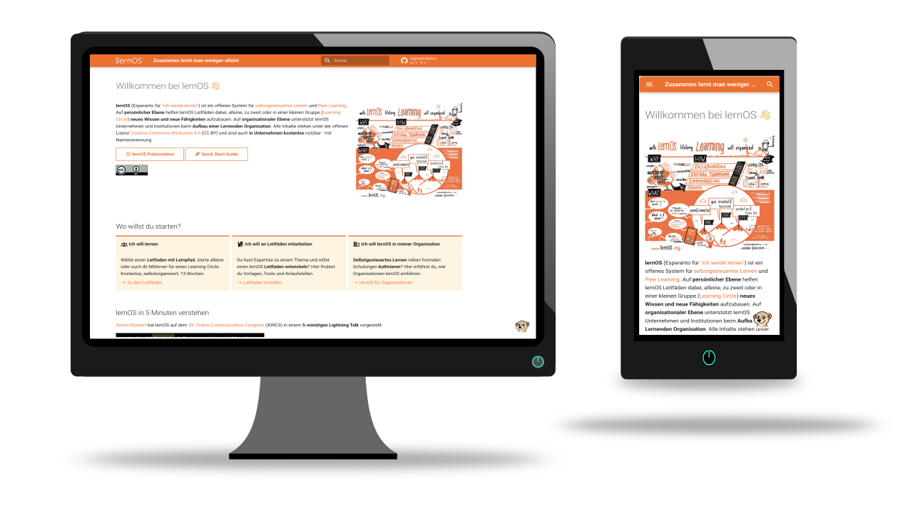
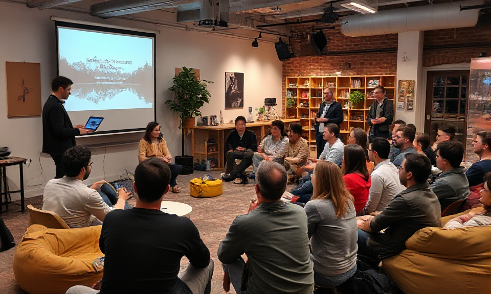
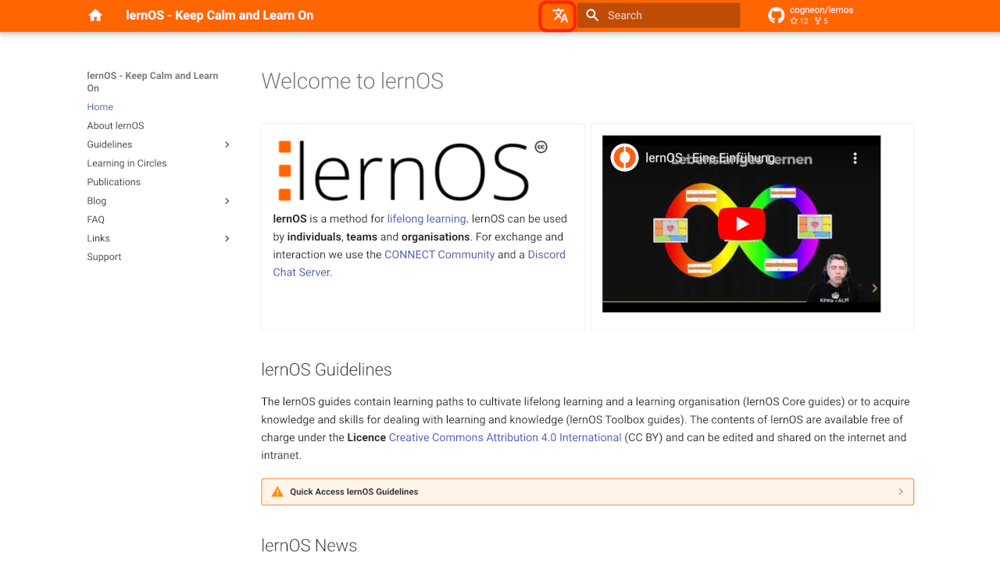
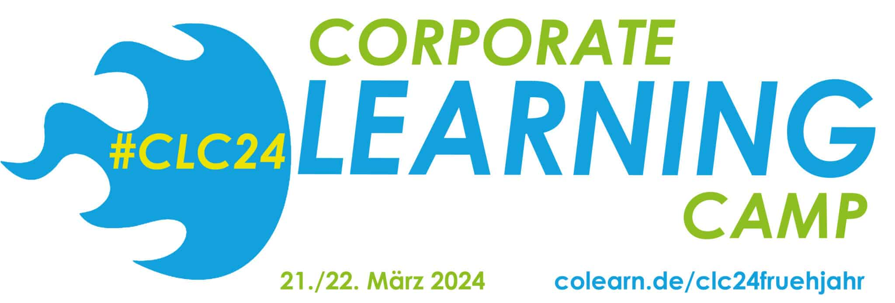
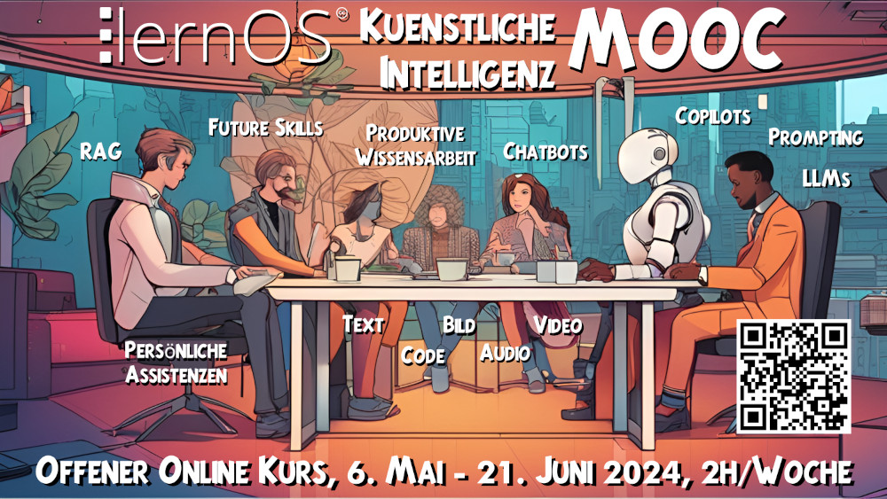

lernOS im Juni 2026
Der Juni 2026 steht natürlich ganz im Zeichen der lernOS Convention 2026, die vom 23.-24. Juni 2026 stattfindet. Aber es gibt auch weitere News wie z.B. die Aktualisierung der lernOS Website in Version 3.
So kannst du lernOS Blog abonnieren, um nichts zu verpassen
Dem lernOS Blog kannst du auch mit dem RSS-Feed folgen - wer keinen Feedreader hat, kann NewNewsWire für iOS oder Flym für Android probieren. Wir informieren außerdem über die Linkedin-Seite, den Linkedin-Newsletter und unter @lernos auf Mastodon. Außerdem gibt es noch den lernOS on Air Podcast (Podcast-Feed, Spotify), die Meetup-Gruppe der Cogneon Akademie für Terminankündigungen und die CONNECT Community für Austausch und Diskussion.
Der Juni 2026 steht natürlich ganz im Zeichen der lernOS Convention 2026, die vom 23.-24. Juni 2026 stattfindet. Aber es gibt auch weitere News wie z.B. die Aktualisierung der lernOS Website in Version 3.

lernOS ist ein Community-Projekt - die Leitfäden und die Convention standen bisher im Mittelpunkt. Mit der lernOS Website Version 3.0 bekommt jetzt auch diese die Aufmerksamkeit, die sie verdient: klare Zielgruppenansprache, neue Seiten und ein Chatbot-Assistent.
Auf dem 39C3 hat Simon einen Lightning Talk zu lernOS für Dich gehalten. Dank c3lingo gibt es für das Video auch eine englische und eine französische Tonspur (ohne KI). Die Sprache kann beim Zahnrad unter "Audiotrack" ausgewählt werden. Das Video steht unter Creative Commons CC BY und darf gerne im Internet und Intranet verwendet werden.

Vom 23.-24. Juni 2026 findet wieder die lernOS Convention unter dem Motto "AI for Work that Works!" auf der Kaiserburg in Nürnberg, in dezentralen Satelliten und online statt. Da so ein hybrides Multi-Format-Event gut vorbereitet sein will, formiert sich ab Freitag 30.01.2026 mal wieder das grandiose Orga-Team. Sei dabei!

Am Freitag den 19.12.2025 von 10:00-11:00 Uhr treffen wir uns nochmal zu einem lockeren Jahresausklang. Wir wollen die Ereignisse seit der loscon25 zusammenkehren und schonmal über die Eckpunkte der loscon26 (23.-24. Juni 2026) sprechen. Eingeladen ist das Orga-Team, sowie alle, die nächstes Jahr in der Orga mitmachen wollen. Einwahldaten bekommt ihr ganz einfach über diese Anmeldung (Microsoft Teams).

Auf der lernOS Convention 2025 habe ich mit einigen Leuten über die Idee eines monatlichen Meetups gesprochen. Die Idee kam prinzipiell gut an und ich habe versucht, etwas zu planen. Meine Idee war, einen Starttermin mit einigen der Autor:innen des neuen Learning Circles Buchs (*) zu machen und als Termin einfach den Slot des C3Managers Meetup zu verwenden (Donnerstag Nachmittag, 16:00-17:30 Uhr). Da ich aber die Leute terminlich nicht unter einen Hut bekommen habe, mache ich hiermit nochmal einen neuen Anlauf.
Die meisten Menschen werden lernOS Leitfäden in einem Learning Circle nutzen, sich durch die Grundlagen lessen und dann Woche für Woche mit den Kats, den jeweiligen Übungen für die Woche arbeiten. Doch mit den Möglichkeiten der künstlichen Intelligenz entstehen ganz neue Optionen. In diesem Beitrag zeigen wir anhand von ChatGPT, wie man den Markdown-Export des brandneuen lernOS Change Management Leitfadens mit dem KI-Tool der eigenen Wahl smart einsetzen kann.

Wie im lernOS State of the Union Vortrag angekündigt, wollen wir im kommenden Jahr einen Schwerpunkt auf die Internationalisierung des lernOS Projekts legen. Dazu gehört neben der mehrsprachigen Verfügbarkeit der Leitfäden natürlich auch die Website als zentrale Anlaufstelle.

Auf dem Corporate Learning Camp 2024 in Hamburg (#clc24) wird es am 21.03.2024 von 16:15 - 17:00 Uhr eine Session mit dem Titel "lernOS State of the Union - Wo stehen wir als Community, was sind die nächsten Schritte?" geben. Auditive Teilnahme und Diskussion ist über dieses Linkedin Audio Event möglich. Die Session wurde als Podcast aufgezeichnet und ist auf COPOD verfügbar.

Das Leitfaden-Team des neuen lernOS Künstliche Intelligenz (KI) Leitfadens hat die Version 0.1 des Lernpfads fertiggestellt. Den Lernpfad wollen wir gemeinsam mit vielen Lernzirkeln (Learning Circles) im lernOS KI MOOC (Massive Open Online Kurs) vom 6. Mai bis 21. Juni erproben (ca. 2h/Woche nötig). Der Zeitraum ist so gewählt, dass wir die Erfahrungen dann bei der lernOS Convention 2024 (2./3. Juli) zusammentragen und besprechen können.